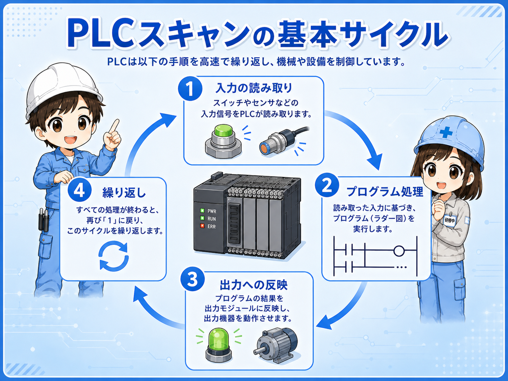
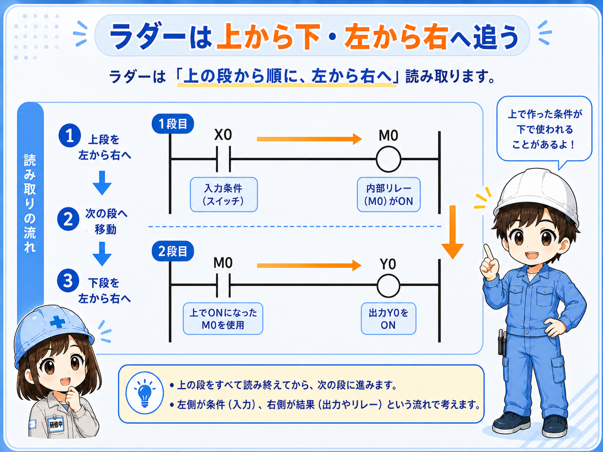
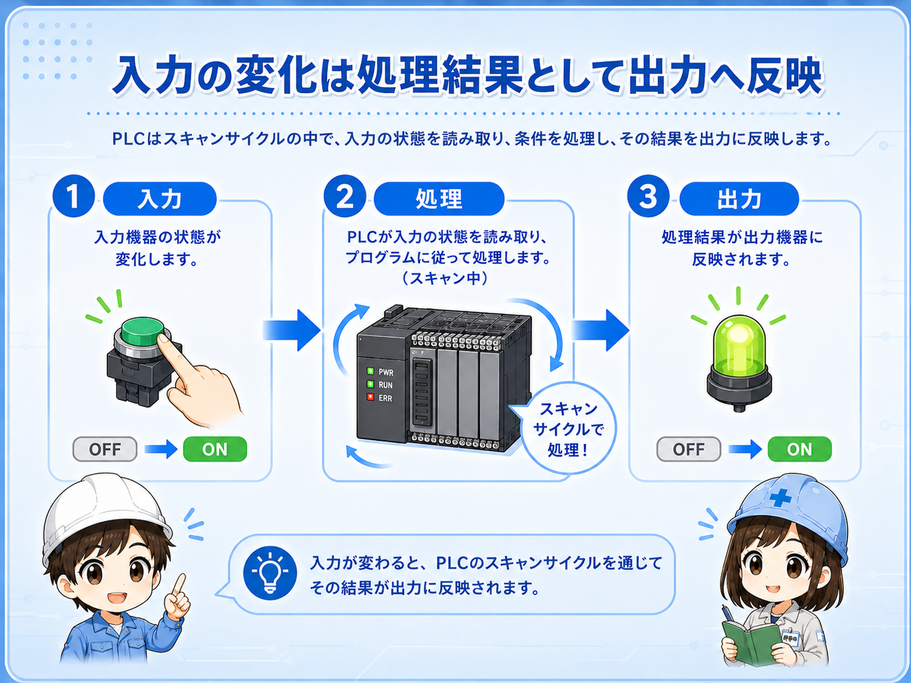
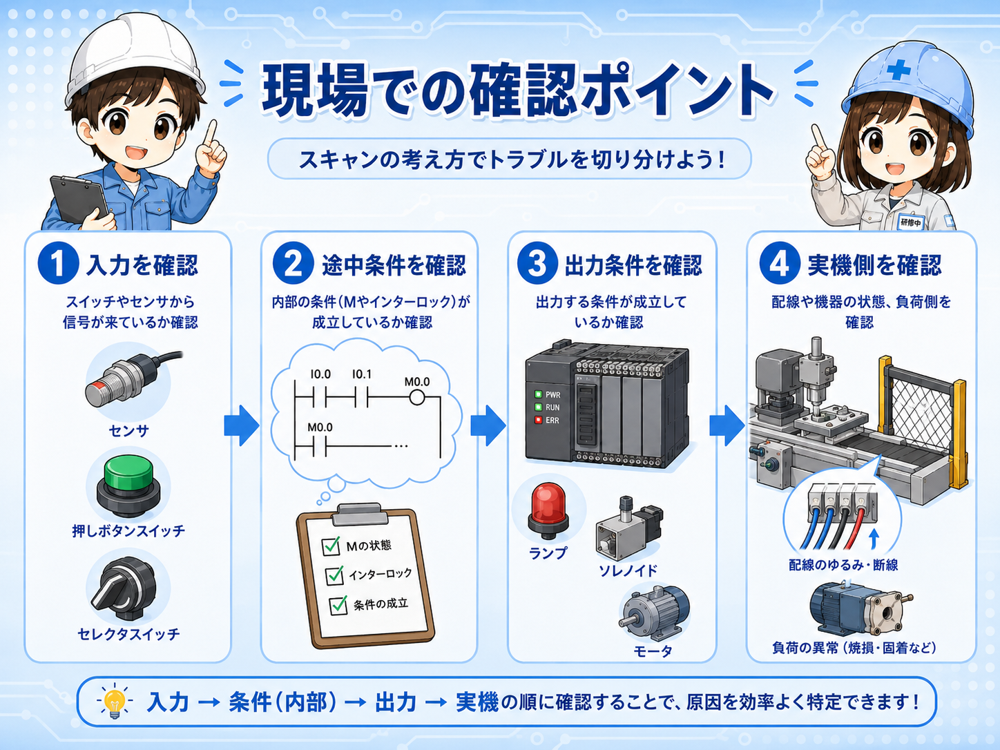

1. 先に結論
PLCのスキャンとは、PLCが入力の状態を読み取り、ラダーなどのプログラムを処理し、その結果を出力へ反映する一連の流れです。 この流れを高速にくり返すことで、設備が連続して動いているように見えます。
初心者のうちは、細かい処理時間よりも、入力を読む、プログラムを処理する、出力へ反映するという順番を押さえると理解しやすくなります。 ただし、実際の処理方式やスキャンタイムの見方はPLCの機種・CPU・設定によって異なるため、正確な仕様はメーカー公式マニュアルで確認します。
スキャンは「PLCが1周している」と考える
1回だけ入力を見て終わりではなく、PLCは同じ処理を何度もくり返しています。 その1周の流れをイメージできると、ラダーの条件や出力が追いやすくなります。

先輩ラダーは画面上では止まって見えるけど、PLCの中では入力を見て、上から順に処理して、出力へ反映する流れをずっとくり返しているよ。

新人1回だけ動いているんじゃなくて、ものすごく速く何周もしている、というイメージなんですね。
2. PLCスキャンの基本的な流れ
PLCの処理は、ざっくり見ると「入力を読む」「プログラムを処理する」「出力へ反映する」という流れで考えられます。 これをくり返すことで、センサーや押しボタンの状態に応じて、ランプ・リレー・電磁弁などを動かします。

| 段階 | 何をしているか | 初心者向けの見方 |
|---|---|---|
| 入力読取 | 押しボタン、センサー、リミットスイッチなどの状態を読みます。 | 今、現場からどんな信号が来ているかを見る段階。 |
| プログラム処理 | 読み取った入力や内部条件を使って、ラダーを処理します。 | 条件が成立しているか、上から順に判断していく段階。 |
| 出力反映 | 処理結果を出力へ反映し、ランプやリレーなどを動かします。 | 判断結果を現場機器へ伝える段階。 |
実際の処理は機種や設定で変わる
この記事では初心者向けに単純化しています。 実際にはCPU、I/O方式、割込み、通信、特殊ユニットなどによって処理の見方が変わる場合があります。
3. ラダーは上から下、左から右へ追うと理解しやすい
ラダーを見る時は、基本的に上から下へ、各回路の中では左から右へ条件を追うと理解しやすくなります。 実際の内部処理はPLCや命令によって細かな違いがありますが、初心者がラダーを読む入口としては、この見方が役に立ちます。
たとえば、上の回路で作ったMデバイスを、下の回路の条件に使っている場合があります。 そのため、「どこで条件が作られて、どこで使われているか」を順番に追うことが大切です。

上で作った条件が下で使われることがある
ラダーを途中から見ると、MやDの意味が分かりにくいことがあります。 その時は、そのデバイスが上の回路や別の場所でどのように作られているかを探します。
4. 入力が変わっても、出力は処理結果として反映される
現場で押しボタンを押したり、センサーが反応したりすると、その状態はPLCの入力として読み取られます。 その後、ラダー条件が処理され、出力条件が成立すればY出力などへ反映されます。
つまり、入力が変わった瞬間にすべてが魔法のように変わるのではなく、PLCのスキャンの中で読み取られ、処理され、結果として出力へ反映されると考えると整理しやすくなります。

入力を見る
センサーや押しボタンがONしているか、PLC入力モニタや入力LEDで確認します。
条件を見る
入力がONしていても、インターロックや停止条件で出力が止まっていないか確認します。
出力を見る
ラダー上の出力条件が成立しているか、実際の出力LEDや負荷側の電圧も確認します。
1周の流れで考える
入力、内部条件、出力結果を別々に見ず、1つの流れとして確認します。
5. スキャンタイムは1周にかかる時間
スキャンタイムとは、PLCが一連の処理を1周するのにかかる時間として説明されることが多い言葉です。 ただし、正確な定義や表示方法はPLCの機種やソフトウェアによって変わります。
初心者の段階では、「PLCはとても速く同じ処理をくり返している」「プログラムが長くなったり処理が増えたりすると、1周にかかる時間も意識する必要が出る」と考えると十分です。
この記事では数値の深掘りはしない
今回の記事は、スキャンタイムの正確な測定や機種ごとの仕様ではなく、ラダーがどのような流れで処理されるかを理解する入口です。 数値管理が必要な場合は、対象PLCの公式マニュアルで確認します。
高速処理が必要な場面では別確認が必要
高速入力、位置決め、通信、割込み処理、安全関連などは、単純なスキャンのイメージだけでは判断できない場合があります。 実機設計や改造では必ず公式資料と社内ルールを確認してください。
6. 現場でラダーを追う時の見方
現場でトラブルを見る時は、「入力は入っているか」「ラダー条件は成立しているか」「出力は出ているか」を順番に分けて確認します。 スキャンの考え方を知っていると、どこで条件が止まっているかを追いやすくなります。

- 入力を確認する：押しボタン、センサー、リミットスイッチなどの入力がPLCに入っているか見る。
- 途中条件を確認する：Mデバイス、インターロック、異常条件、モード条件などが成立しているか見る。
- 出力条件を確認する：Y出力や内部出力がONする条件がそろっているか見る。
- 実機側を確認する：PLC出力だけでなく、リレー、電磁弁、ランプ、電源、配線も見る。
新人入力が入っているのに出力が出ない時は、途中の条件で止まっているかもしれないんですね。
先輩そう。スキャンの流れで見ると、入力だけ、出力だけを見て迷うより、途中の条件を順番に追いやすくなるよ。
7. まとめ
PLCのスキャンは、入力を読み、ラダーを処理し、出力へ反映する流れをくり返す考え方です。 ラダーを読む時は、上から下、左から右へ条件を追い、入力・内部条件・出力結果を分けて見ると理解しやすくなります。
- PLCは入力読取、プログラム処理、出力反映をくり返す
- ラダーは基本的に上から下、左から右へ追うと分かりやすい
- 入力がONしても、途中条件が成立しなければ出力は出ない
- スキャンタイムは1周にかかる時間として考えると入口として理解しやすい
- 高速処理や機種固有仕様は、必ず公式マニュアルで確認する